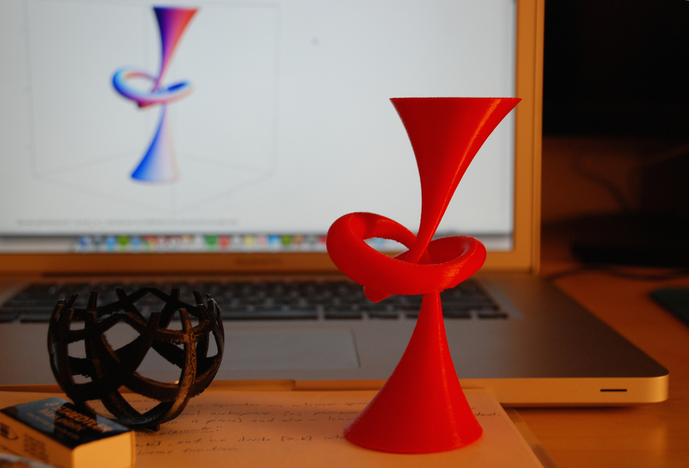
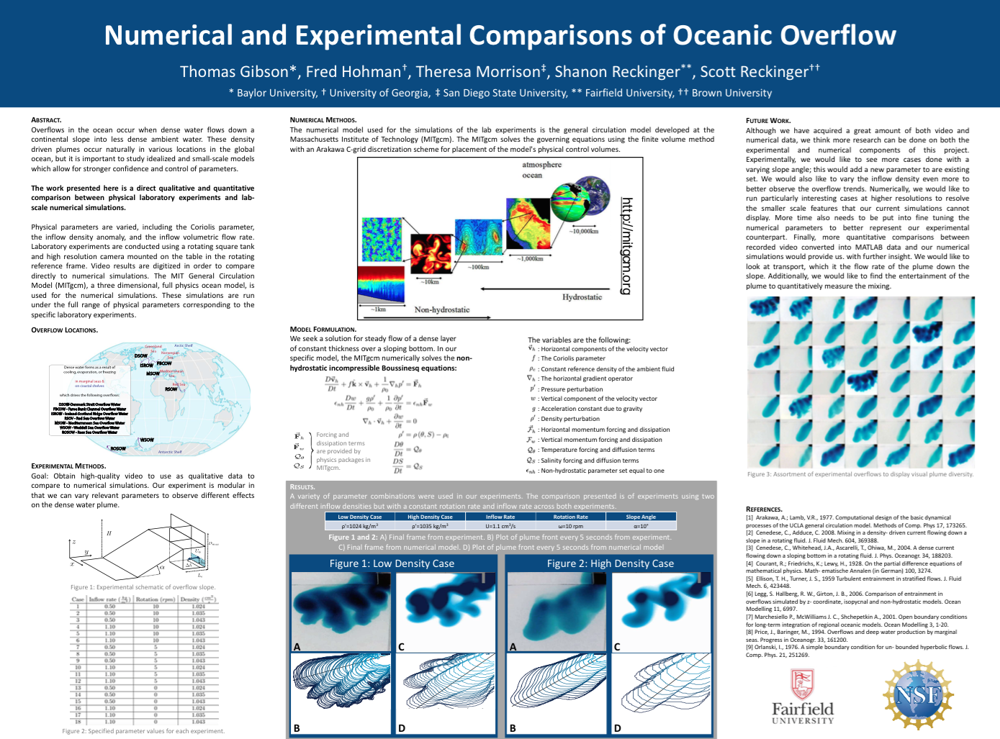
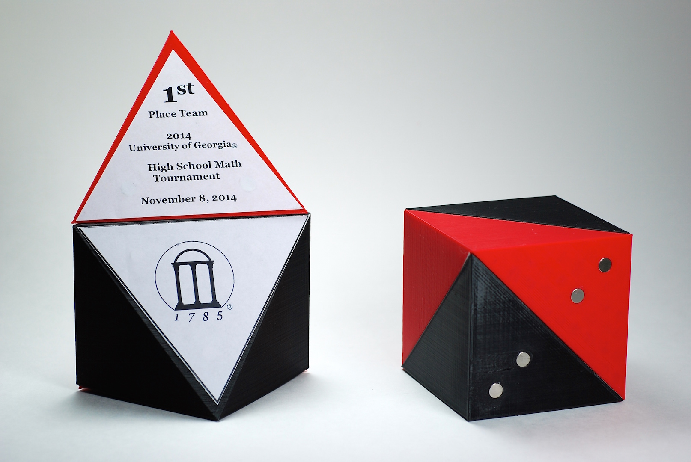
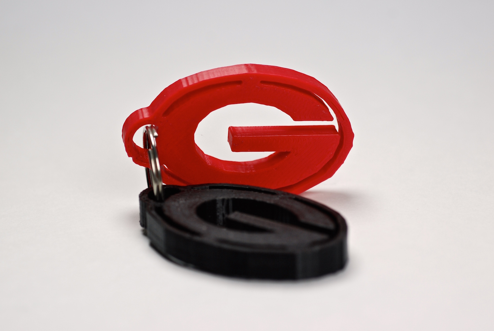
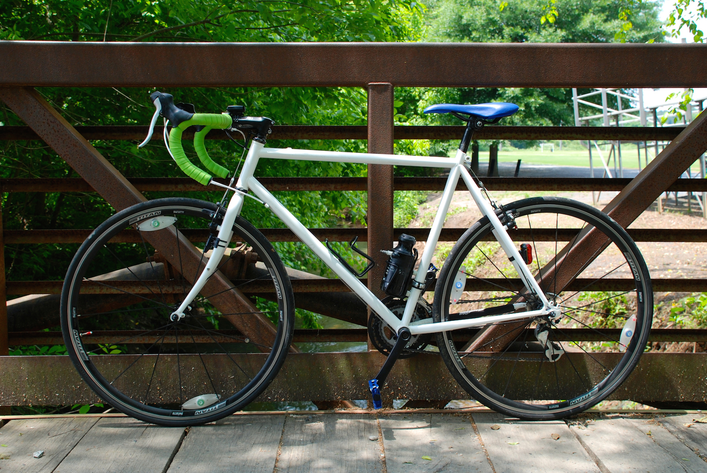
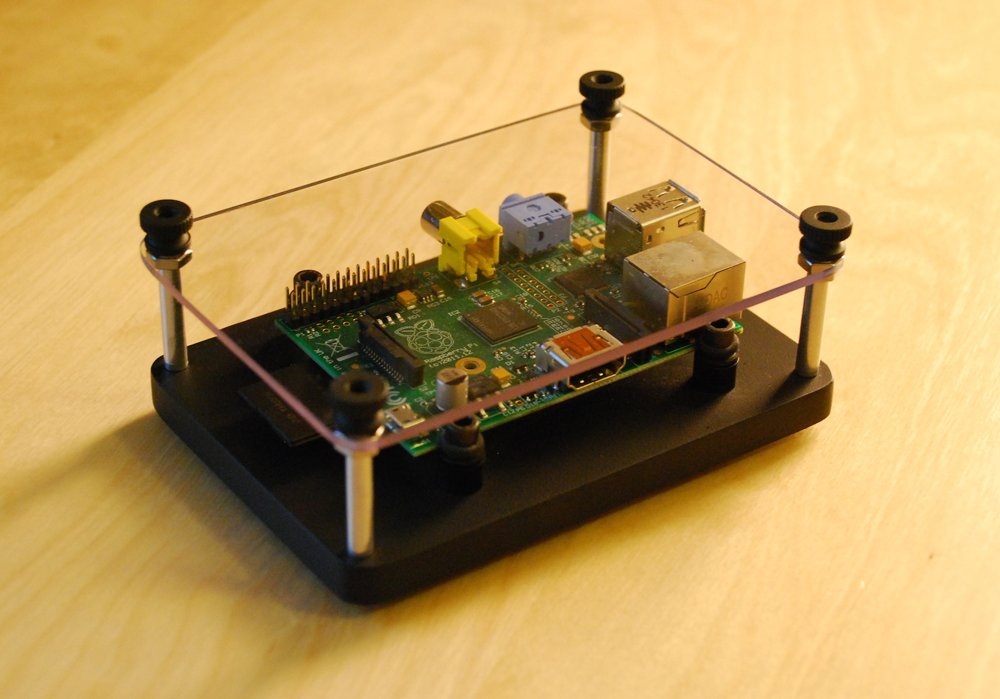

Projects
With an interest in design and a passion for technology, I’m always looking for the next best thing. Here you will find some of my past endeavors including academic work, research projects, and anything else I find interesting.
3D Printing Research
December, 2013 – Present

I am currently exploring 3D printing techniques in
topology under Professor
Dr. David Gay in the
Mathematics Department at UGA, in particular, visualizing complex shapes and knots using a
MakerBot Replicator 2. My project involves coding, generating, and manipulating variations of the open-book decomposition of the
trefoil knot in Mathematica to create a "3D printed puzzle" made of multiple pieces that hold together via small magnets.
During the summer of 2014 I was asked to guest post on
Dr. Laura Taalman’s (
mathgrrl on Thingiverse; James Madison University) website:
MakerHome. She printed one object every day for a year—including my trefoil knot. I wrote a two-part piece for her website which describes in detail the mathematical theory governing my research, the visualization techniques used, and models I have printed so far. You can read the
introduction here,
part I here, and
part II here.
I was then invited to re-post this piece on
Wolfram Community. The project spread around the internet and was written about on
3DPrint.com amongst other mathematics blogs, such as this Sketches of Topology post titled
"Mathematics with 3D Printing.” You can download my models from my
Thingiverse profile to print for yourself.
Math & Computational Science REU
June, 2014 – July, 2014

Funded by the National Science Foundation,
Research Experiences for Undergraduates (REU) are summer research programs for students in science, engineering, and mathematics. I participated in
Fairfield University’s REU in Mathematics & Computational Science where I was supervised by
Dr. Shanon Reckinger of the Mechanical Engineering Department of Fairfield University. Our project directly compared numerical solutions derived from the
Navier-Stokes equations to designed experiments performed at the lab-scale to model a specific oceanic phoneme: overflow.
Overflows in the ocean occur when dense water flows down a continental slope into less dense ambient water. These density driven plumes occur naturally in various locations in the global ocean, but it is important to study idealized and small-scale models which allow for stronger confidence and control of parameters. My group designed and built an experiment to mimic oceanic overflow while also configuring the
MIT General Circulation Model on a linux computer cluster to parallel compute numerical simulations. We then directly compared our experimental data with our numerical simulations using MATLAB for pre- and post-processing visualization.

JMM Poster. Click to Expand.
Academic Projects
Image Compression
May, 2014
For my Numerical Analysis II final, I implemented
Principal Component Analysis (PCA) to perform mathematical image compression. The class’s algorithms were ranked based on visual image recovery and mine won the
50% compression category. The
project write-up introduces the reader to PCA, discusses an OS X Automator program for improving the compression algorithm, and provides the Mathematica code to compress any arbitrary image.
Railgun Simulation
March, 2014
For my Numerical Analysis II midterm, I simulated the launch of a railgun projectile from Pearl Harbor, HI to a hostile watercraft 250 miles due west. The
project write-up includes the relevant physical assumptions that were made, the system of ordinary differential equations modeling the projectile’s path, the code to run the simulation, and discussion and visualization of the results.
Path Minimization
December, 2013
For my Numerical Analysis I final, I wrote Mathematica code that implements a minimization algorithm to determine the shortest possible distance over the San Gabriel mountain range in California using topological data provided by National Elevation Dataset. The
project write-up includes a description of the project, relevant code, and plots of the path over the given terrain.
Numerical Ordinary Differential Equation Solution and Integration Project
May, 2013
For my numerical project in Mathematical Methods in Physics, I developed and programmed a forty-sheet Excel workbook to solve for the solutions to a Hydrogen Combustion Model during the “ignition” and “explosive growth” phases. My
write-up includes discussion and analysis of numerical error when computing complex integrals.
Cube Decomposition Trophy
October, 2014

This is a 3D printed, three-piece cube decomposition model that can be transformed from a cube to a trophy for any given competition. The model was originally made for the
University of Georgia’s High School Math Tournament and was given away to the top scoring teams and participants.
Click to enlarge.
The model features built-in holes for
D6x1mm magnets (6mm diameter and 1mm height) that can be glued in after the print has completed. The additional color emphasizes the unique geometry of the middle piece. The model can be downloaded and printed from the Thingiverse post
here.
UGA Keychain
October, 2014

This is a 3D printed model of the
University of Georgia’s “G” logo that was made for UGA’s Art Education event as a part of
Experience UGA. Dozens of the keychains were printed to give to middle and high school students exploring the intersection of art and science. The model is fully scaleable and can be downloaded and printed from the Thingiverse post
here.
Road Bike Restoration
July, 2012

In 1987 my father was fitted for a Norco hybrid bicycle. After many years of use, the bike was hung from a hook and placed in the back of the garage. In 2012, after my first year of college, I came home in search of a better means of transport around campus. I decided to spend some time restoring and converting the 25 year-old Norco into a road bike.
Click to enlarge.
After cleaning old parts and salvaging what I could, I had a chromoly frame that predated me to build upon. I used
Sheldon Brown’s website for tips on what to buy. I purchased drop down handlebars, derailleurs, wheels, and other modern hardware from
Performance Bicycle and began painting and building. I lowered the bike’s total gear count to 16, but that has been plenty to get to class quickly—even over the large hills in Athens, GA.
Raspberry Pi Case
July, 2013

The
Raspberry Pi is a small microcomputer that teaches computer science—primarily Python—techniques to people of all ages. The $35 credit-card sized computer ships with 512 MB of onboard ram, an ARM processor clocked at 700 Hz, and a full set of standard I/Os that are compatible with most peripheral accessories. Many lightweight
Linux distributions exist for the Raspberry Pi that can be sideloaded onto an SD card to act as the Raspberry Pi’s primary HDD.
Click to enlarge.
I primarily use my RPi to learn Python and tinker with small automation projects, so my RPi typically sits on my desk. I machined this solid aluminum case to protect the RPi from harmful outside interaction. The design maintains the Raspberry Pi’s functionality by leaving the sides open and LED’s visible while also allowing for others to view the microcomputer. The case looks great on a desk too.